Running my own LLMs for coding: Hyperstack, vLLM and the pi coding agent
The gt calculator was built almost entirely with self-hosted LLMs running on rented Hyperstack VMs, and I ended that post with a promise: "I will write another blog post at some point about my setup and what I learned from self-hosting models on Hyperstack." This is that post.
2026-06-01 gt calculator - a calculator built with local LLMs
In this post I go through the setup, how the inference works under the hood (prefill, decode, KV cache, prefix caching), the numbers I see in practice, and where I stand now on buying hardware.
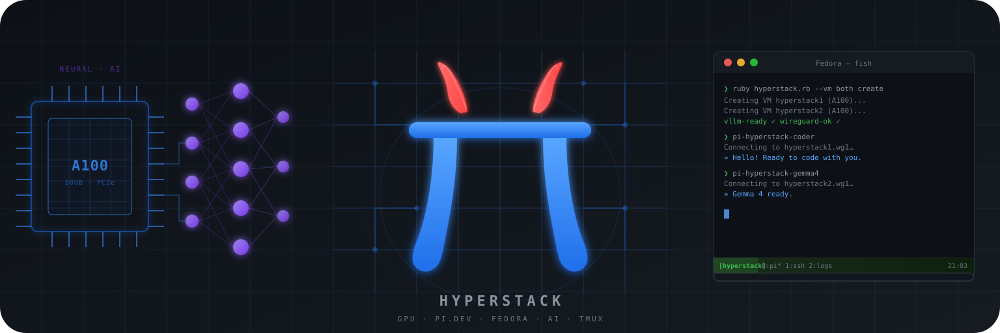
Updated Wed 30 Sep: Corrected the technical explanations, cost comparison and speculative-decoding benchmark claims, and simplified the CUDA section.
Table of Contents
Why rent instead of buy
The main motivation was a question I wanted to answer before spending money: should I buy hardware to run my own LLMs? A new RTX 5090 with 32 GB VRAM costs a few thousand dollars, and a 128 GB DGX Spark Founders Edition now has a $4,699 MSRP. Before putting either on my desk, I wanted to know what it feels like to have a 27B model (and the occasional 120B one) as a daily coding partner. So I rented instead: Hyperstack VMs with A100 80 GB GPUs, spun up when I need them, torn down when I don't.
Hyperstack
A few months in, the setup has grown into a small toolchain I call hypr. One Ruby script manages the whole lifecycle (create the VM, open a WireGuard tunnel, start vLLM with the model of choice), and I can run two VMs at the same time, each with its own model and its own pi coding agent in a tmux pane. For example, Qwen3.8 27B works on one project in pane 0 while Gemma 4 31B works on another in pane 1, and when one of them gets stuck I hand the same problem to the other.
hypr on GitHub
Pi coding agent
The setup at a glance
Everything starts on my laptop. ruby hyperstack.rb --vm 1 create (or --vm both for two VMs in parallel) provisions a Hyperstack VM (Ubuntu 24.04 with CUDA and Docker preinstalled, one A100 80 GB PCIe GPU), sets up a WireGuard tunnel to it, and starts the model in a vLLM Docker container. About ten minutes later the model is serving on an OpenAI-compatible API, reachable over the tunnel.
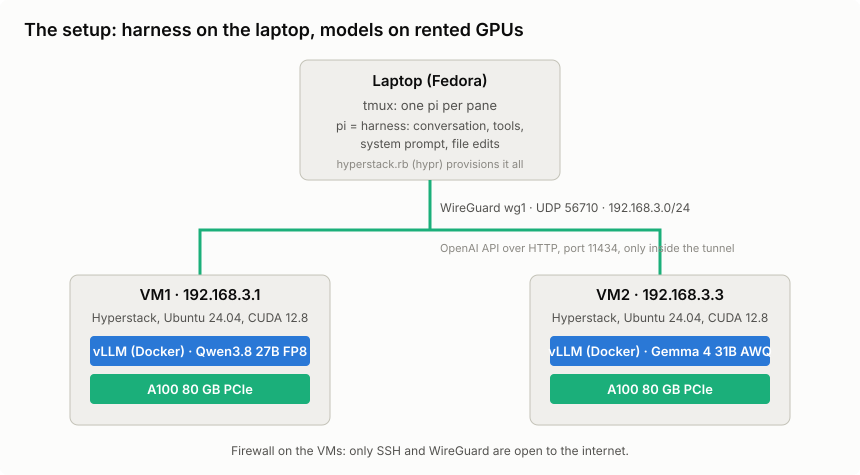
The WireGuard tunnel is the interesting bit. A single wg1 interface on my laptop (Fedora Linux, by the way!) routes traffic to both VMs. The firewall on the Hyperstack VMs only lets in SSH and the WireGuard port, so the vLLM port (11434) is only reachable through the tunnel. There's no other authentication: no proxy, no load balancer, no API keys. The API isn't exposed to the internet at all, and the tunnel is the security boundary.
hypr is a Ruby script with a small TOML config per VM. The commands that matter:
- create / delete — provision or destroy a VM (WireGuard + vLLM included)
- status — VM, tunnel and model state
- test — end-to-end inference check over the tunnel
- watch — live dashboard: GPU, throughput, KV cache per VM
- model switch <preset> — replace the serving container with another model on the same VM
- --no-speculative — start without speculative decoding (on by default for my Qwen3.8 preset, more below)
What decides if this works
Before the walkthrough, a short glossary of the things that matter when you run LLMs yourself. The bigger topics get their own section below or come back later in the post:
- VRAM — the GPU's memory (unified memory on Apple silicon or a DGX Spark). Holds the weights plus the KV cache.
- KV cache — the model's working memory for everything in the context. Grows with context length and lives in VRAM.
- Memory bandwidth — small-batch decode is often limited by memory bandwidth. "Fits" and "feels fast" are different questions.
- Token generation speed (decode tok/s) — the speed you feel while the agent "types".
- Prefill speed (prompt tok/s) — how fast the prompt is read in. Decides how long you wait for the first token.
- Parameter count vs quantization — bigger and less quantized is usually better, but costs VRAM. Newer small models can beat older big ones.
- MoE vs dense — MoE models only use a small part of their parameters per token. Faster, but not smaller. Quality depends on the particular models, not just this architecture choice.
- Context vs weights — weights and cached context share the same memory budget.
- LLM reasoning level — Makes the LLM "think harder" in exchange for more tokens.
- Tool-calling reliability — without working tool calls, you are back to copy-paste chat.
- Harness overhead — the system prompt, tool schemas and extensions eat context before you type a word.
- Runtime — plug-and-play (Ollama, LM Studio) vs knobs and throughput (vLLM). hypr picks the second.
The next section explains how inference works: VRAM, the KV cache, prefill, decode and the runtime. MoE, quantization and reasoning come with the models after that, and the harness topics (system prompt, tool calling) get their own section once pi enters the picture.
How the inference works
This is the part I set out to learn, so here is the mental model that finally clicked.
CUDA: how vLLM uses the GPU
CUDA is NVIDIA's software platform for running calculations on its GPUs. In my setup, the CPU runs vLLM's request handling and decides which work to send to the GPU. Through CUDA, it launches small GPU programs called kernels. The GPU does the model's heavy maths, using the weights and cached context in its own memory.
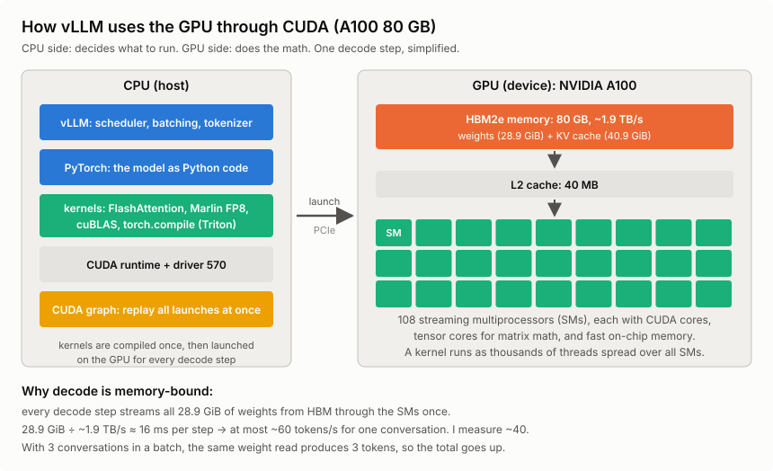
I don't need to write CUDA code for this. vLLM and its libraries take care of it. The NVIDIA Container Toolkit lets the Docker container use the host's GPU and driver with --gpus all.
One detail surprised me: my A100 can store FP8 weights, but can't calculate with FP8 natively. vLLM uses Marlin kernels to convert them as it works. I still get the smaller weight footprint, just not native FP8 arithmetic.
vLLM: FP8 weights and the Marlin path on older GPUs
What vLLM is
vLLM is an open-source inference engine: the program that takes a model's weights and turns prompts into tokens at high throughput. Ollama does the same job packaged for convenience: one command pulls a quantized model and it's serving. vLLM is the lower-level engine you run yourself, in Docker, with flags, and tune per model. Ollama optimizes for "make it run"; vLLM optimizes for throughput, context length, and batching, and exposes the knobs (--max-model-len, --gpu-memory-utilization, --enable-prefix-caching) so you can spend the VRAM the way your workload needs it.
An LLM request has two phases:
- Prefill — the model processes the prompt, doing work on many tokens together. Long prompts can be split into chunks. This phase makes good use of the GPU's parallel computing power.
- Decode — generating the answer, normally one token at a time. Every new token depends on the previous ones. For a few concurrent conversations, reading the model weights and cached context can be the bottleneck. This is the phase you watch while the agent "types".
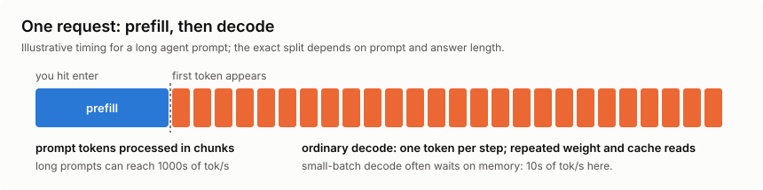
The two phases show up as very different numbers. Prefill can process thousands of tokens per second; ordinary decode in my setup produces tens per conversation. During prefill, many tokens share the work of reading weights from GPU memory. During decode, that cost returns at each step. Batching conversations and speculative decoding (below) can get more tokens out of each pass. Prefill and any queueing affect the wait for the first token; decode affects how quickly the answer arrives after that.
The key data structure is the KV cache. Full-attention layers reuse key and value tensors from earlier tokens instead of recomputing the whole history for each new token. Their cache grows with the context. My models also have layers that work differently: Qwen3.8-27B has 48 Gated DeltaNet layers with recurrent state and 16 full-attention layers; Gemma 4 mixes sliding-window and global attention. So the exact memory cost depends on the architecture.
The context window is a length limit, while the cache is the memory used to serve requests within that limit. A request needs room for both its prompt and its generated answer, including thinking tokens. Spare cache memory does not raise the configured or supported context limit.
Qwen3.8-27B architecture and model card
vLLM: cache management for hybrid models
VRAM = model weights + KV/state cache pool + runtime overhead + headroom
--gpu-memory-utilization 0.92 → vLLM may use 92% of the 80 GB
--max-model-len 262144 → max context: 262,144 tokens (the "262K")
At startup, vLLM loads the weights, then budgets runtime memory and a pool of cache blocks within the allowed VRAM. That is why nvidia-smi shows ~72–75 GiB "used" even when nothing is running. The pool is preallocated, not busy.
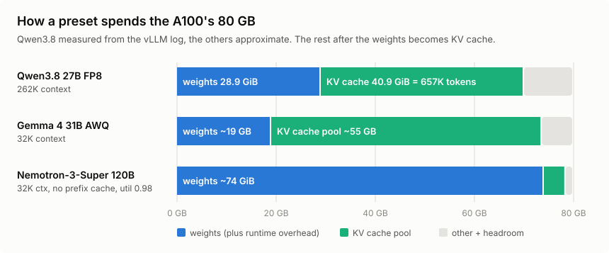
Prefix caching: the big one for agentic coding
--enable-prefix-caching lets vLLM retain reusable cache blocks between requests until it needs to evict them. If a new request shares a prefix with a previous one (same system prompt, same conversation history), matching cached blocks can skip prefill. Evicted blocks and an incomplete final block may still need work.
For a coding agent this is huge. Every turn of a coding agent session resends the system prompt plus the entire conversation. Without prefix caching, that whole context is re-prefilled on every single turn. With it, most of the prompt arrives already computed. My current sessions sit at an 80–97% hit rate (numbers below).
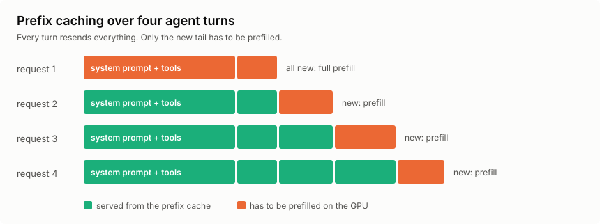
This is also the main reason I moved from Ollama to vLLM. Its block cache can retain prefixes from several conversations, chunked prefill lets a long prompt share GPU time with ongoing decode, and Marlin supports the AWQ presets I use.
Ollama has prefix reuse too, and supports Flash Attention and configurable context lengths. The 32K limit in my old setup was my setting. My vLLM setup felt faster for this workload, but I didn't run a controlled comparison with identical models, quantization, context and cache state. I can't turn that experience into a general speed ratio between the two engines.
Ollama's prefix-matching cache implementation
Ollama: Flash Attention and parallel requests
Ollama: configuring context length
Ollama is still nicer if I just want a model serving quickly. For several coding agents, I prefer vLLM's batching and cache controls.
Speculative decoding: 2.7× faster decode
There's one more decode trick, and it turned out to be the biggest speedup in this whole setup: speculative decoding. The idea is to guess the next few tokens cheaply and let the big model check all the guesses in one go.
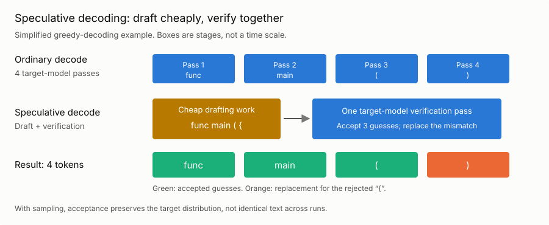
Here's a simplified example using greedy decoding, where the model always picks its highest-scoring token:
- A cheap predictor drafts a few tokens. It might be a compatible smaller model or a built-in multi-token prediction (MTP) head.
- The main model checks the draft positions together in one verification pass.
- Matching guesses are accepted until the first mismatch, where the main model supplies the replacement. If every guess matches, it can also supply a bonus token.
With probabilistic sampling, the acceptance rule is different: rejection sampling preserves the target model's output distribution. That does not promise identical text from two separate runs, and numerical differences still matter.
vLLM: speculative decoding and its guarantees
Why can this be faster? Several draft positions share a read of the main model's weights. At small batch sizes, checking those extra positions can be relatively cheap. Drafting and verification still cost time and memory, though, and rejected guesses waste work. The speedup depends on how often the guesses are accepted. Predictable bits of code, such as boilerplate and repeated identifiers, are a useful case to try.
With several agents already batched, there may be less spare capacity for speculation. So I measured both cases.
Qwen3.8's config has mtp_num_hidden_layers: 1, so the model ships its own MTP head, and vLLM supports it. In vLLM, it's one flag: --speculative-config '{"method": "mtp", "num_speculative_tokens": 3}'. I added it to the Qwen3.8 preset in hypr. It's on by default now, and --no-speculative on create or model switch turns it off again.
To see if it pays off, I benchmarked it on the A100: six Go coding prompts with up to 700 output tokens each, thinking off, first one conversation at a time and then three in parallel. I ran it without speculative decoding and with 2, 3 and 4 drafted tokens. The chart shows sampling at temperature 0.7 and top_p=0.8:
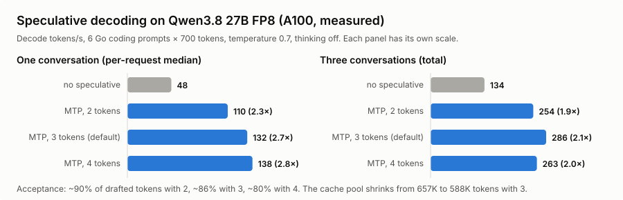
That's a lot more than I expected. Median decode speed for a single conversation went from 48 to 132 tokens per second with 3 drafted tokens, 2.7 times as fast. This excludes the wait for the first token. Three conversations together went from 134 to 286 tokens per second, counting all wall time including that wait. About 86% of the drafted tokens were accepted: roughly 2.6 accepted guesses plus one target-supplied token per verification step. The MTP head did well on these prompts.
I went with 3 drafted tokens for now. It had the best total throughput with three sampled conversations in this run. Four won with greedy decoding, and even with sampling its per-request decode speed was slightly higher. But its median wait for the first token rose to 1.21 seconds with three sampled conversations; with three drafts it stayed around 0.4 seconds. I only ran six prompts per case, without repeated trials, so this isn't a settled optimum.
The memory cost was about 10% of the KV cache pool: 657K down to 588K tokens, still enough for more than two full 262K contexts.
These were short prompts with thinking off. I haven't measured the speedup in long coding sessions or with thinking on. Even the baseline was faster than the ~40 tokens per second from my recorded work morning (see "The numbers" below). The benchmark script and results are in the hypr repo.
hypr: speculative decoding benchmark and config
Qwen3.8 FP8 configuration
vLLM's Qwen3.8 recipe, including MTP
The VMs and the models
Both VMs are n3-A100x1 flavors: one A100 80 GB PCIe, 28 vCPUs, 120 GB RAM, in a Canadian region. When the A100 flavor is sold out, I manually change the config to n3-H100x1. It also has 80 GB of GPU memory, but its hardware, price and performance differ; it is not the machine behind the A100 measurements below.
The default model on VM1 is Qwen/Qwen3.8-27B-FP8, a dense 27B model with a native 262K context window, FP8-quantized. As of writing, that is also my main model in this setup, and the throughput and startup observations below are from that setup. VM2 runs Gemma 4 31B (AWQ 4-bit) by default, so I can work on two projects in parallel with two different models and compare how they behave.
Each VM's TOML config defines named presets, so switching models does not mean reprovisioning. The memory figures below are approximate weight footprints, not total vLLM allocations. The context lengths are my configured limits, not necessarily the models' native limits:
- qwen38-27b — Qwen3.8 27B FP8 (default), ~29 GiB weights, 262K context
- qwen36-27b — Qwen3.6 27B FP8, ~29 GiB weights, 262K context
- gemma4-31b — Gemma 4 31B IT (AWQ-4bit), ~19 GB weights, 32K context
- nemotron-super — Nemotron-3-Super 120B (AWQ 4-bit, Mamba+MoE, 12B active), ~74 GiB weights, 32K context
- qwen36-35b-a3b — Qwen3.6-35B-A3B MoE (AWQ, 3B active), ~18 GB weights, 65K context; runs with a quantized KV cache (turboquant_k8v4) and chunked prefill disabled
- qwen3-coder-30b — Qwen3-Coder-30B-A3B (MoE, AWQ), ~18 GB weights, 65K context
- qwen25-coder-32b — Qwen2.5-Coder-32B (AWQ), ~18 GB weights, 32K context
- deepseek-r1-32b — DeepSeek-R1-Distill-Qwen-32B (AWQ), ~18 GB weights, 32K context
- qwen3-32b — Qwen3-32B (AWQ), ~18 GB weights, 32K context
- devstral — Devstral-Small-2507 (AWQ-4bit), ~15 GB weights, 32K context
ruby hyperstack.rb --vm 1 model switch nemotron-super stops the running container, starts a new one with the preset's flags, and waits for readiness. The weights are cached on the VM's ephemeral NVMe disk after the first download, but a switch still takes minutes (see below).
Two details:
- These observations used vllm/vllm-openai:nightly. I haven't recorded the exact image digest here, so this is a snapshot of that run, not a reproducible benchmark of today's nightly. Use a pinned, compatible release or digest when reproducing it.
- My Nemotron AWQ preset uses 32K context, disables prefix caching and CUDA graph capture (--enforce-eager), and raises --gpu-memory-utilization to 0.98. These are the settings I used to fit it on one A100, where weights take most of the memory. That tension between model size and context length is the core of VRAM budgeting (see the VRAM chart above).
Why starting a model takes minutes
Loading a model onto the GPU sounds like "copy 29 GiB from disk to VRAM". That part is actually fast. My provisioning timings and vLLM logs give this approximate breakdown:
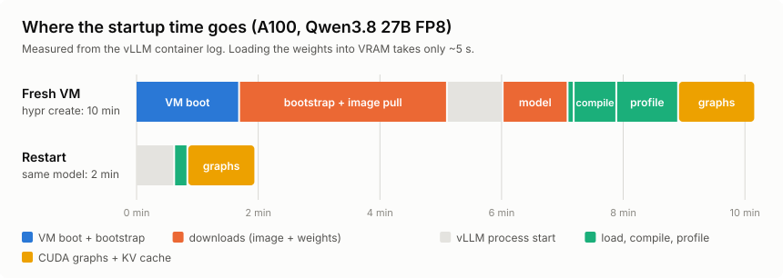
On a fresh VM, hypr create took about 10 minutes in total:
- VM boot — ~1.5 minutes until Hyperstack hands over a running VM.
- Bootstrap — ~3.5 minutes for packages, WireGuard, the firewall and pulling the 32 GB vLLM Docker image.
- vLLM start — ~1 minute for Python, the API server and the engine to come up.
- Weights — ~1 minute to download 29 GiB from Hugging Face, then 5 seconds to load them into VRAM.
- torch.compile — ~40 seconds to compile the model's GPU kernels for this GPU.
- Profiling run — ~1 minute for a dummy pass at the maximum batch size.
- CUDA graphs and KV cache — ~1.3 minutes to allocate the KV cache pool and capture CUDA graphs.
The last three steps prepare the GPU work. Compilation combines and optimises operations, profiling estimates the memory needed during inference, and CUDA graph capture records launch sequences that can be replayed with less CPU overhead. My log reported a 40.9 GiB cache pool and 86 captured graphs.
A restart of the same container is faster: about 2 minutes. The weights are already on disk, and the compiled kernels come from vLLM's on-disk compile cache (0.55 seconds instead of 30). But the CUDA graphs are captured again on every start (~1 minute), and the Python and API startup doesn't get faster either.
That's why switching models ad hoc is painful. model switch takes at least 2 minutes for a model that was already used on this VM, and more for a new one (download plus a cold compile). On top of that, every running agent session loses its prefix cache and has to prefill its whole context again. So instead of switching back and forth, I run two VMs with two different models loaded. Switching between them is then just picking the other provider in pi (Ctrl+L), and it's instant.
MoE vs dense, and quantization
A dense model uses all of its parameters for every token. A mixture-of-experts (MoE) model is split into many "experts", and a small router picks only a few of them per token. So only a small active set does the work, e.g. 3B active out of 35B total.
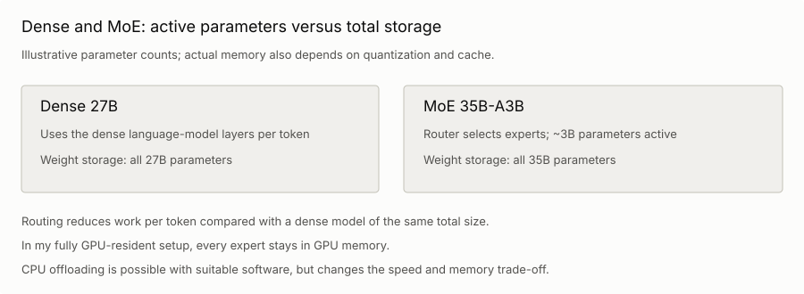
That makes decode much faster than on a dense model of the same total size, because far fewer weights are read per token. In my fully GPU-resident setup, all experts stay in VRAM because the router can choose different ones for the next token. Offloading experts to CPU memory is possible in other setups, but changes the performance trade-off.
Several presets are MoEs (Nemotron-3-Super, qwen36-35b-a3b, qwen3-coder-30b). Only the active parameters do the work per token, which is why Nemotron can be 120B total with 12B active and still decode at a usable speed. But in this setup all 120B parameters still have to fit into VRAM, and that's why it barely fits once the context is capped. The qwen36-35b-a3b preset only fits into ~18 GB because it's also 4-bit quantized.
Quantization is how the rest of the list fits. FP8 stores the quantized weights in 8 bits (a 27B model is ~27 GB of weights, plus some overhead). AWQ uses 4-bit weights for the quantized layers, plus scales and any layers kept at higher precision. It reduces the footprint; the quality and speed trade-off depends on the model and kernels. FP8 on the 27B is my daily driver: good quality, 28.9 GiB of weights, and 40.9 GiB left for the KV cache. vLLM reports that as 657,281 tokens, enough for about 2.5 full 262K contexts at the same time. I haven't compared these presets against quantization-aware training (QAT) variants on my own tasks. QAT makes lower precision part of training rather than only applying it afterwards.
Why this is the daily driver
The official model card benchmarks Qwen3.8-27B against its predecessor, Qwen's own closed-weight Qwen3.7-Plus, a 30B-class competitor, and the frontier Opus 4.6 Max. Here are selected coding and general-reasoning rows as a chart:
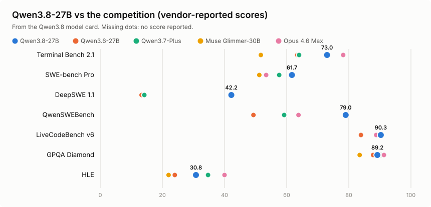
It beats its direct predecessor on every row, and the rows that match how I use it are the interesting ones: on SWE-bench Pro (agentic coding) the 27B dense model scores 61.7, ahead of Opus 4.6 Max's 53.4 and Muse Glimmer's 51.2; on terminal coding it runs 73.0 to Qwen3.6's 63.4; on competitive coding (90.3) it even edges Opus (88.8). Those results made it worth trying as a coding partner on one rented A100.
These are vendor-reported scores, and a couple of the benchmarks are Qwen's own. For SWE-bench Pro, Qwen corrected some tasks and re-evaluated the other models with Claude Code, but retained the previously reported Opus score. That makes 61.7 versus 53.4 an uneven comparison. The table also doesn't establish the score of my FP8 checkpoint running through pi.
Qwen's benchmark table and evaluation notes
Simon Willison tried the model on a DGX Spark and an M5 Max MacBook the week it shipped. His experience of overthinking matches mine: the model defaults to xhigh reasoning effort.
Qwen 3.8 27B is excellent, but it defaults to wildly overthinking things (Simon Willison)
Reasoning: what it is and the effort levels
Reasoning models "think" before they answer. They write out their thoughts first, usually between <think> and </think> tags, and only then produce the answer or tool call. They were trained (mostly with reinforcement learning) to work through a problem step by step in that scratchpad, and for tricky tasks the answers get noticeably better.
For the inference engine, thinking tokens are completely normal output tokens. They're decoded one by one at decode speed, and they fill the KV cache like everything else. vLLM's reasoning parser (--reasoning-parser qwen3 in my presets) only splits them from the answer, so pi can show them separately. They're the greyed-out text in the screenshots.
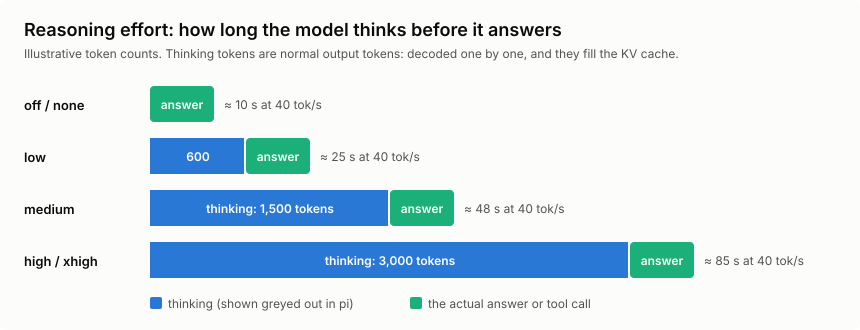
Many models offer reasoning effort levels: off, low, medium, high, and sometimes xhigh. The model was trained to think shorter or longer depending on the level. How the level reaches the model depends on the model and the API:
- A chat template flag — Qwen's enable_thinking switches thinking on or off.
- A line in the system prompt — e.g. Reasoning: high for OpenAI's open-weight gpt-oss models.
- An API parameter — reasoning_effort in OpenAI-style APIs, which the provider translates for the model.
And not every model supports it:
- Models without a dedicated thinking mode do not expose this control. On my preset list, that's Qwen2.5-Coder, Qwen3-Coder and Devstral.
- Reasoning models such as DeepSeek-R1-Distill do not offer the same supported thinking on/off switch as hybrid models.
- Hybrid models, like Qwen3-32B, Qwen3.6 and Qwen3.8, can switch thinking on and off. Qwen3.8 also has effort levels and defaults to xhigh.
Here's a catch I only found while writing this post. pi shows "medium" as the thinking level in its footer. But for Qwen models, pi only sends enable_thinking: true or false to vLLM. So low, medium and high all just mean "on", and Qwen3.8 then thinks at its own default, xhigh. That explains a lot of the overthinking Simon Willison describes. pi also asks the chat template to keep the thinking of earlier turns in the history (preserve_thinking), so the thinking keeps taking up context later, too. And for Gemma and Nemotron, my pi config marks the models as non-reasoning, so pi's level does nothing there at all. For Nemotron, that's a config gap on my side: its chat template can enable thinking independently of pi's setting. The reasoning parser only separates that output; it does not turn thinking on.
I haven't done a clean on-vs-off comparison on my own tasks yet, so I won't pretend I have numbers. But the math is simple: at ~40 tokens per second, 2,000 thinking tokens are 50 seconds before the first word of the answer. For agent turns where I already know what the change should look like, that's mostly wasted time and context. Worth a dedicated experiment later. For now, I live with the default and interrupt the model when it spirals.
Inside the VM
Once the tunnel is up, the VM is just another machine on your network, and I mostly work on it over its WireGuard address rather than the public IP:
$ ssh ubuntu@192.168.3.1
ubuntu@hyperstack1:~$ hostname
hyperstack1
The entire "AI service" from the inside is one Docker container:
$ docker ps
CONTAINER ID IMAGE COMMAND CREATED STATUS PORTS NAMES
aa1845729f93 vllm/vllm-openai:nightly "vllm serve --model …" 2 hours ago Up 2 hours vllm_qwen38_27b
The interesting part of the container's log is the Engine 0 line vLLM emits every ten seconds, the same line the watch dashboard parses. This snapshot is from later in the day than the numbers further down:
$ docker logs --tail 4 vllm_qwen38_27b 2>&1 | grep "Engine 0"
(APIServer pid=1) INFO 09-13 08:56:54 [loggers.py:311] Engine 000: Avg prompt
throughput: 0.0 tokens/s, Avg generation throughput: 53.6 tokens/s, Running:
2 reqs, Waiting: 0 reqs, GPU KV cache usage: 59.3%, Prefix cache hit rate: 96.9%
(APIServer pid=1) INFO 09-13 08:57:14 [loggers.py:311] Engine 000: Avg prompt
throughput: 0.0 tokens/s, Avg generation throughput: 48.3 tokens/s, Running:
1 reqs, Waiting: 0 reqs, GPU KV cache usage: 33.3%, Prefix cache hit rate: 96.9%
Follow it live with docker logs -f vllm_qwen38_27b 2>&1 | grep "Engine 0", or watch the hardware side with nvidia-smi --query-gpu=temperature.gpu,utilization.gpu,power.draw --format=csv -l 5.
The harness: pi
So far, everything was about the model side. Now to the other half, the coding agent I actually type into.
LLM vs harness
I say "the model edited my file" all the time, but that's not really what happens. Two different programs are involved:
- The LLM — the model weights, served by vLLM on the VM. Text goes in, text comes out. It has no memory between requests, can't see my files and can't run anything.
- The harness — pi, running on my laptop. It keeps the conversation, builds the system prompt, offers tools to the model, runs the tools the model asks for, edits the files, and shows it all in the terminal.
Claude Code, Codex, OpenCode and Cursor are harnesses, too. They usually come bundled with their vendor's model, which blurs the line. With a self-hosted setup the line is very visible: the model is on a VM in Canada, the harness is on my laptop, and the only thing between them is HTTP over WireGuard.
So the model decides what to do, and the harness does it. That's why I can swap the model under pi with one keystroke without changing anything else. It's also why the same model can feel smart in one harness and dumb in another. The harness decides what the model gets to see, and that has a huge effect on how good "the LLM" seems. More on that once the system prompt, tools and skills are explained.
How pi talks to vLLM
Pi speaks the OpenAI chat completions API, and vLLM serves exactly that on :11434, so pi points straight at the VM over the tunnel, with no translation proxy in between.
The repo ships a pi/ directory that I symlink to ~/.pi. It defines providers in models.json, one per VM, plus a single-VM variant:
- hyperstack1 → http://hyperstack1.wg1:11434/v1 — Qwen3.8 27B FP8
- hyperstack2 → http://hyperstack2.wg1:11434/v1 — Gemma 4 31B AWQ
- hyperstack → http://hyperstack.wg1:11434/v1 — single-VM variant
Every preset from the TOML configs is registered under its provider, so after a model switch I can just tell pi to use the new model ID, or hit Ctrl+L in the TUI to switch models mid-session without restarting.
Fish abbreviations keep the day-to-day short:
abbr pi-hyperstack-coder pi --model hyperstack1/Qwen/Qwen3.8-27B-FP8
abbr pi-hyperstack-gemma4 pi --model hyperstack2/cyankiwi/gemma-4-31B-it-AWQ-4bit
My standard setup is a tmux session with one pi per pane: pi-coder on Qwen3.8 in pane 0, pi-gemma4 in pane 1, each working on a different project against its own VM. When one model gets stuck on a task, I hand the same problem to the other pane and compare.
Here is what a session looks like in practice. I asked Qwen3.8 on VM1 to add a version command to the REPL of gt, and then to include the Go runtime version in its output. The screenshot shows the Go diff for the tests, followed by the test run. The footer shows the model and how much of the 262K context the session has used so far:
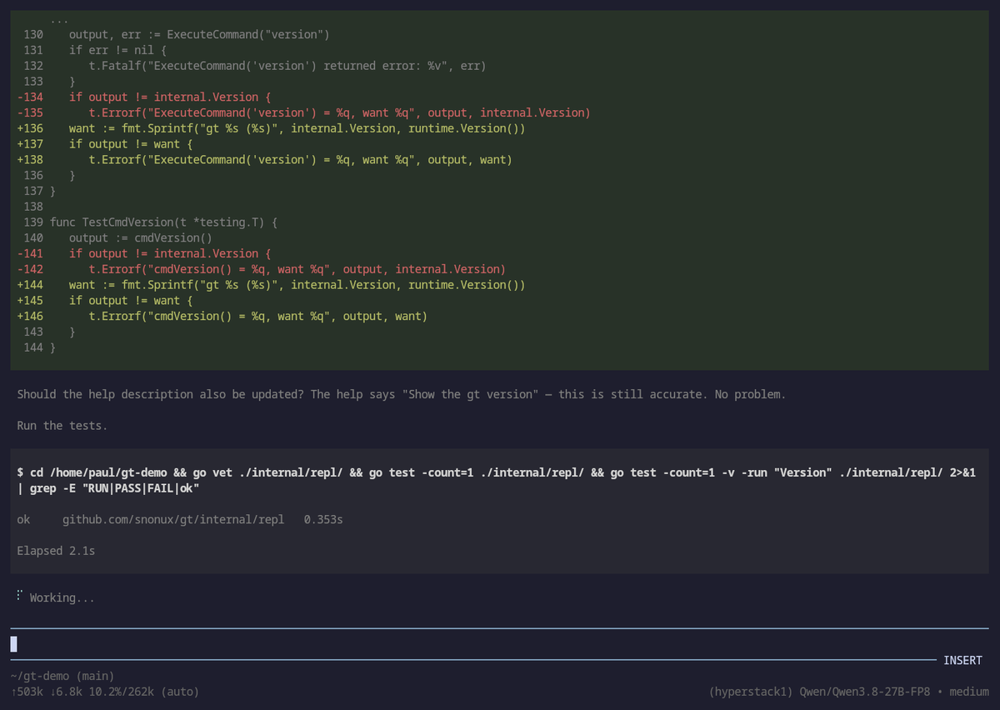
And one from an earlier session: diff on top, the model's reasoning in the middle, shell output at the bottom:
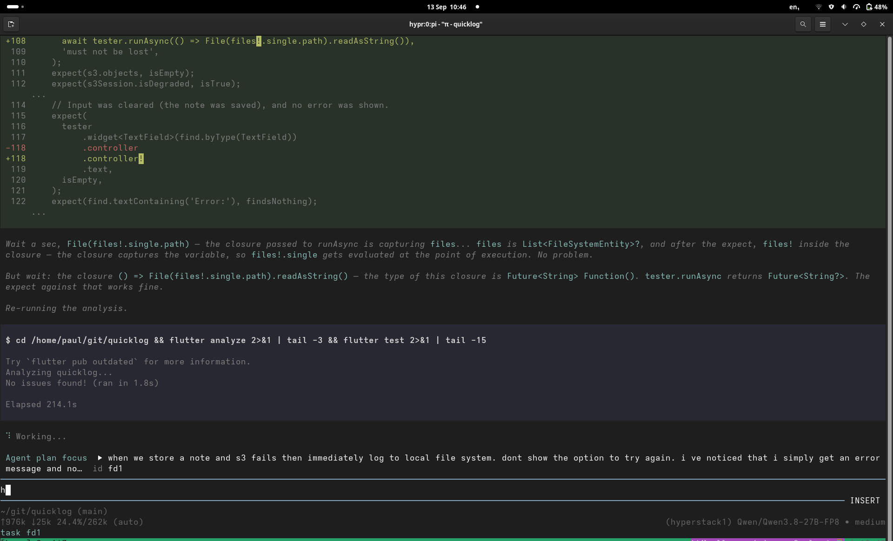
The system prompt and harness overhead
Every harness puts a system prompt in front of every conversation: a hidden first message that tells the model who it is (a coding agent), how to behave (be concise, ask before destroying things, edit files with the edit tool and not with sed), which tools it has, and which project rules apply.
Here's what that looks like in pi. This is the start of its built-in system prompt, trimmed a little:
You are an expert coding assistant operating inside pi, a coding agent
harness. You help users by reading files, executing commands, editing
code, and writing new files.
Available tools:
- read: Read file contents
- bash: Execute bash commands (ls, grep, find, etc.)
- edit: Make precise file edits with exact text replacement, including
multiple disjoint edits in one call
- write: Create or overwrite files
Guidelines:
- Use read to examine files instead of cat or sed.
- Use edit for precise changes (edits[].oldText must match exactly)
- Use write only for new files or complete rewrites.
- Be concise in your responses
- Show file paths clearly when working with files
After that, pi appends the project context (the content of any AGENTS.md or CLAUDE.md in the project), then the list of skills, and at the very end the current date and working directory:
<project_context>
Project-specific instructions and guidelines:
<project_instructions path="/home/paul/git/hypr/AGENTS.md">
...
</project_instructions>
</project_context>
The following skills provide specialized instructions for specific tasks.
Use the read tool to load a skill's file when the task matches its description.
<available_skills>
<skill>
<name>blog-writing-style</name>
<description>De-LLM blog posts to sound authentically human. ...</description>
<location>/home/paul/.pi/skills/blog-writing-style/SKILL.md</location>
</skill>
...
</available_skills>
Current date: 2026-09-30
Current working directory: /home/paul/git/hypr
The order is not random. Everything that never changes comes first, and the parts that change (the date, the directory) come last. That way the prefix cache can reuse as much of the prompt as possible.
You never type it, but it's resent with every request and takes up KV cache like everything else. So do all the tool definitions (bash, read, edit, web_search, ...), skill descriptions (more on skills below), and project instructions such as an AGENTS.md. With dozens of tools, that's thousands of tokens before you've typed a word. The good news: all of that is identical on every turn, so it's the first thing prefix caching serves from cache.
The model doesn't run anything itself. The harness sends it a list of tool schemas (name, description, JSON arguments) along with the prompt. When the model wants to act, it outputs a structured call such as read_file {"path": "main.go"} instead of prose. The harness runs the tool, appends the result to the conversation, and asks the model again. That repeats until the task is done.
That loop is what makes an agent an agent. It falls apart when the model emits broken JSON or picks the wrong tool.
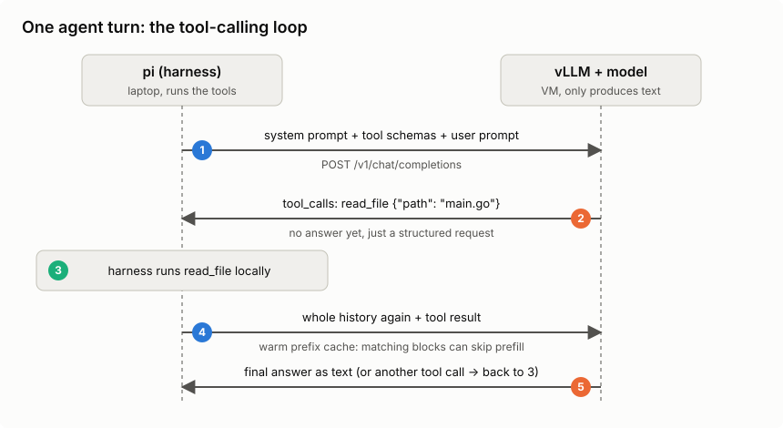
So what does this look like on the wire? Since vLLM speaks the OpenAI chat completions API, the whole agent loop is ordinary HTTP. Here's one turn, trimmed down. First, the harness (pi) sends the conversation plus the tool schemas:
POST http://hyperstack1.wg1:11434/v1/chat/completions
{
"model": "Qwen/Qwen3.8-27B-FP8",
"messages": [
{"role": "system", "content": "You are a coding agent. Use the tools..."},
{"role": "user", "content": "What does main.go do?"}
],
"tools": [{
"type": "function",
"function": {
"name": "read_file",
"description": "Read a file from the project",
"parameters": {
"type": "object",
"properties": {"path": {"type": "string"}},
"required": ["path"]
}
}
}]
}
The model doesn't answer the question yet. It answers with a tool call instead of text. This is the real (trimmed) response from Qwen3.8 on VM1:
{
"role": "assistant",
"content": null,
"tool_calls": [{
"id": "chatcmpl-tool-996eae953d7c06fa",
"type": "function",
"function": {"name": "read_file", "arguments": "{\"path\": \"main.go\"}"}
}]
}
Note that arguments is a JSON string the model generated token by token. If it forgets a quote or a brace, the call is broken. That's exactly what the nemotron-tool-repair extension (further down) patches. The harness validates the arguments, runs the tool locally, and sends everything back with the result appended:
"messages": [
{"role": "system", "content": "You are a coding agent. Use the tools..."},
{"role": "user", "content": "What does main.go do?"},
{"role": "assistant", "tool_calls": [{"id": "chatcmpl-tool-996e...", ... "read_file" ...}]},
{"role": "tool", "tool_call_id": "chatcmpl-tool-996e...", "content": "package main\n\nfunc main() {..."}
]
By the way, vLLM reported 292 prompt tokens for that first request, with just one short system prompt and one tool. pi's real system prompt with all its tools is a lot bigger.
Now the model has the file contents in its context and can answer in plain text (or request another tool call, and the loop goes on). Two things I found interesting here. The model only ever sees text going in and text coming out, so "calling a tool" is just a special output format it was trained to produce. And every round trip resends the whole history, including all tool results, so the context (and the KV cache) grows with every step. That is why agentic work is so prefix-cache-heavy.
One server-side detail: the model emits its tool calls in its own raw format (Qwen uses XML-ish tags, others use JSON). vLLM only turns that into the structured tool_calls field if it runs with --enable-auto-tool-choice --tool-call-parser <name>, with the parser matching the model family. hypr sets these per preset; with the wrong parser you get the raw text back and the agent stalls.
Skills, commands and MCP servers
Most harnesses (pi, Claude Code, Codex, OpenCode) know two kinds of reusable prompts, and it took me a while to get the difference:
- Commands — prompt templates you trigger yourself, like /handoff or /plan. They cost nothing until you type them.
- Skills — a folder with a SKILL.md (name, description, instructions, maybe scripts). The model triggers them itself.
For skills to work, the harness puts the name and description of every skill into the system prompt. So a command is "I decide", a skill is "the model decides". The harness never loads a whole skill up front. It works in levels, and each level is only loaded when it's needed:
- Level 1 — the name and description of every skill. Always in the system prompt.
- Level 2 — the skill's SKILL.md. The model reads it with a normal file read once a task matches.
- Level 3 — files the SKILL.md points to, like reference docs or scripts. Only read if the instructions for the task at hand need them.

And yes, that changes how much context gets used. Level 1 costs context on every single request, even for skills you never use. Levels 2 and 3 cost nothing until they're loaded. But once the model has read a SKILL.md or a reference file, it's a tool result in the conversation, and it stays in the context (and the KV cache) for the rest of the session, until a compaction or a /handoff throws it out. My blog-writing-style skill is a good example: its SKILL.md is ~2.3K tokens, and the one reference file a style fix usually needs is another ~1.2K. The other three reference files (~11K tokens) stay on disk unless a task asks for them. Loading everything up front would cost ~14K tokens, which is almost half of a 32K preset.
I have 47 skills and 21 commands in my pi setup. The skill descriptions alone are ~17 KB of text, roughly 4K tokens in every request. On the 262K daily driver, that's fine. On a 32K preset, it's an eighth of the context gone before I've typed a word.
The bigger downside of too many skills isn't even the tokens, though. The model has to pick the right skill from the list, and with many similar descriptions, it picks the wrong one or none at all. Big frontier models handle that pretty well. Smaller self-hosted models get confused much more easily. So fewer, clearly distinct skills work better, especially with local models.
MCP (Model Context Protocol) servers are a third way to extend a harness, and they build directly on the tool calling from above. An MCP server is a separate process that offers tools (and other things) to the harness over a standard protocol, e.g. for a database, a ticket system or a browser. The harness adds its tool schemas to the tool list, so for the model it's just more tools, with the same context cost. A single MCP server can bring dozens of tool schemas. pi deliberately ships without MCP support (its author suggests CLI tools plus skills instead), and I haven't added it, so MCP is out of scope for this post.
What if you don't need MCP? (Mario Zechner)
Why the harness makes the model look smart (or dumb)
With the system prompt, tools and skills explained, it's easier to see why the harness matters so much. The model only knows what's in its context, and the harness decides what goes in there. Here is what makes the difference:
- Context selection — which files, logs and search results the harness feeds in. The model can't fix code it has never seen.
- System prompt and tool descriptions — clear instructions and well-named tools mean fewer wrong tool calls.
- Tool design — a precise "replace this exact snippet" edit tool is much easier for a model than rewriting a whole file.
- Feedback loops — running tests, go vet or the compiler and feeding the errors back lets the model fix its own mistakes.
- Context hygiene — compaction, /handoff and sub-agents keep the context short, and models get worse as the context fills up.
- Tolerance for quirks — the right chat template, tool-call parser and small repairs (like nemotron-tool-repair) keep one broken call from derailing a session.
- Settings — reasoning effort, temperature and the context limit are configured on the harness or provider side, not in the weights.
The screenshot above is a good example. Qwen3.8 didn't just write the version command. It looked at how the other builtins are registered, added a matching help entry, and ran go vet and the tests before saying it was done. The model did the thinking, but it could only do that because pi gave it file reading, editing and a shell, and fed the test output back into the context.
This also matters for benchmarks. Scores like SWE-bench are measured with a specific agent setup around the model. Put the same weights into a different harness, and you get different results, sometimes a lot better or worse. So when a self-hosted model disappoints, it's worth checking the harness side (tools, context, parser, settings) before blaming the weights.
The extensions
Pi ships deliberately minimal: no permission popups, no plan mode, no built-in sub-agents. The hypr repo bundles a set of TypeScript extensions that fill in the gaps. The ones I use daily:
- web-search — web_search and web_fetch tools backed by DuckDuckGo (no API key), so the agent looks things up instead of guessing from training data.
- inline-bash — !{cmd} in a prompt expands the command's output before it reaches the model; that is how git status, logs, and nvidia-smi output end up inside a question.
- ask-mode — /ask flips the session into a read-only investigation mode: understand the codebase and read logs with editing tools disabled and shell commands filtered. This is a convenience mode, not an enforced read-only filesystem; its command filter can still allow writes. Before I let a model near code I don't fully know, this is the first call: /ask why does the tunnel setup regenerate keys on the second run?
- loop-scheduler — /loop re-sends a prompt on an interval and /watch fires when the agent goes idle or a response contains a substring. The two forms I actually use: /loop 10m check the VM status and warn me if KV cache usage is above 80% for the periodic check, and the reactive /watch contains ERROR => summarize the latest error and propose a fix. That is how I babysit long builds and flaky services.
- handoff — /handoff <goal> compacts the session into a self-contained prompt for a fresh one, so a long-lived agent does not drown in its own history.
- fresh-subagent — the subagent tool and /subagent command run a self-contained task in a clean pi process with its own log file, while the main session stays focused: /subagent review the last commit and list the risks gives me the verdict without the digging.
- btw — a mid-task question that must not derail the context: /btw which file owns the SSH host key bootstrap logic? The answer appears in a temporary overlay and stays out of the session history.
- agent-plan-mode — /plan separates planning from execution: a read-only planning mode, a numbered plan, then the plan converted into real tasks before anything gets built. That is how the multi-step work in this repo stays on rails.
- modal-editor — an in-TUI modal editor for composing long prompts without fighting the line editor.
- session-name — labels a session with something more useful than the first prompt line.
The long tail is smaller: nemotron-tool-repair fixes the malformed tool calls the Nemotron models occasionally emit, and prompt-history quietly records the last 500 prompts.
For the record: handoff, inline-bash, session-name, and reload-runtime are upstream pi examples installed locally; the rest are my own.
What the extensions cost
The same trade-off as with skills applies: every tool an extension adds lands in the system prompt. I haven't measured the exact token bill of the full extension set, but it isn't free. On the 27B FP8 daily driver the full set is fine. On the smaller AWQ presets with 32K context, I'd start with fewer tools and add them when needed, since fewer tools also means fewer chances for a small model to pick the wrong one or mangle the arguments. That's a hypothesis, though. I haven't measured it.
I haven't compared tool-call reliability systematically across the preset list, so no failure-rate table from me. What I know from daily use: the Nemotron models occasionally emit malformed tool calls, which is why nemotron-tool-repair exists. It patches the broken calls so the session continues instead of stalling.
The numbers
I kept 474 log samples from about 80 minutes of work on the A100, running Qwen3.8-27B-FP8 with a 262K context limit. Here's one:
Engine 000: Avg prompt throughput: 253.8 tokens/s, Avg generation
throughput: 35.9 tokens/s, Running: 1 reqs, Waiting: 0 reqs,
GPU KV cache usage: 5.0%, Prefix cache hit rate: 81.1%
ruby hyperstack.rb watch combines these ten-second log intervals with nvidia-smi in a dashboard that refreshes every two seconds:

- One conversation generated about 40 tok/s. Two or three together reached about 100–110 tok/s total. That was before I turned on speculative decoding. A separate short-prompt benchmark showed 2.7× single-conversation decode speed and 2.1× aggregate throughput with three conversations.
- The busiest ten-second prompt window averaged about 3,000 tok/s. That's an interval average, including gaps, not peak prefill speed.
- Cache usage was around 16% for much of the morning and reached 40%. Prefix-cache hit rates ranged from 80% to 97%.
- The GPU drew about 80 W idle and up to 299 W during a burst, with temperatures from 57°C to 66°C.
The surprise was running three agents in three tmux panes against one GPU. I didn't notice a slowdown. Batching shares weight reads across conversations, although each still adds compute and cache work.
A few dashboard details caught me out. VRAM stays near 90% even when idle because vLLM reserves the cache pool. The separate KV-cache bar shows how much of that pool is in use. Neither bar tells me how close one conversation is to its 262K limit. running includes prefill as well as decode, and 100% GPU utilisation means a kernel was running throughout the sample, not that every compute unit was fully used.
NVIDIA: GPU utilisation
Short turns sometimes finished in 10–15 seconds; long answers and thinking took longer. My old Ollama setup felt slower, but its settings differed, including a 32K context limit. I wouldn't call that a benchmark.
What I trust it with (and what I don't)
The gt calculator was the proof case, a real project built almost entirely on this stack. Day to day I also use it for ops babysitting via /loop and /watch: check the VM, watch a build, poke me when something smells wrong. That is work I trust it with.
Vendor SWE-bench numbers are not my session success rate. Hit-and-miss still happens. When a turn starts looping or the model gets lost in its own plan, I bounce the hard bit to a hosted frontier model and bring the answer back.
It's good enough that I built a real project on it and keep using it every day. But I still have to babysit it.
What it costs, and do I buy the hardware?
The A100 costs $1.35/hour on demand, billed per minute. The H100 fallback is $2.50/hour. Reserved prices start at $0.95 and $1.75 respectively (September 2026). Leaving one A100 running for a 30-day month would cost $972, so I delete mine when I'm done.
Hyperstack pricing
That recorded morning, before speculative decoding, cost about $1.78 for 79 minutes and produced roughly 250K output tokens. If I charge the whole bill to output, that's $7.12 per million tokens, including prompt processing and time spent waiting on tools.
Speculative decoding makes the tokens cheaper. In the same short-prompt benchmark, counting the whole run:
- One conversation went from 46.9 to 123 tok/s: $8.00 down to $3.05 per million output tokens, about 62% cheaper.
- Three conversations went from 133.5 to 286.3 tok/s total: $2.81 down to $1.31 per million, about 53% cheaper.
Those runs had thinking off and included the wait for the first token, but no tool calls or idle gaps between coding turns. I haven't measured the savings over a full work session yet. The VM still costs $1.35/hour either way.
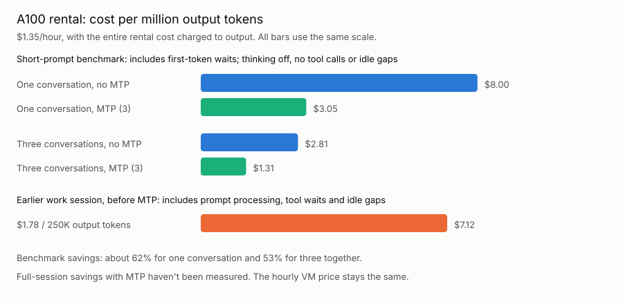
For an API comparison, OpenRouter lists these prices for Qwen3.8 27B on 30 September 2026, per million tokens:
- Chutes: $2.20 output, $0.24 uncached input, $0.024 cached input.
- Reka AI: $4.35 output, $0.0248 uncached input, $0.0155 cached input.
The chart shows their output charges; input costs come on top. My GPU bars include the whole rental bill. I still can't price the full work session through an API: the earlier 11M input-token estimate needs checking because current vLLM logs exclude cache hits from prompt throughput.
OpenRouter's Qwen3.8 provider prices, checked 30 September 2026
vLLM's token accounting
Buying still doesn't appeal to me:
- An RTX 5090 has 32 GB. My FP8 model with a full 262K context won't fit. Its bandwidth is close to the A100 PCIe's (1,792 versus 1,935 GB/s); memory capacity is the problem here. Lower precision or CPU offloading would change what I could run.
- A DGX Spark has 128 GB, but costs $4,699 at NVIDIA's revised MSRP. Its 273 GB/s bandwidth makes ordinary single-stream decode a concern. The advertised 200B model capacity assumes quantization and enough room left for runtime memory.
RTX 5090 specifications
A100 specifications
DGX Spark price change
DGX Spark specifications
Spark does run CUDA and vLLM, with a compatible ARM container. I could use the same Hugging Face serving approach there; it isn't limited to GGUF or LM Studio.
Running vLLM on DGX Spark
A $5,000 machine equals about 3,704 hours of A100 rental. At four hours every day, that's two and a half years, before electricity, resale value and performance differences. Buying could pay off. I'm just not ready to bet on which machine I'll still want by then.
Wrapping up
I'll keep renting for now. I still want a GPU on my desk, partly for privacy and partly because I like owning the tools I use. A rented VM is still somebody else's hardware. Perhaps replacing my ThinkPad will be the excuse; perhaps I'll wait for a faster unified-memory box.
I'd keep my cloud subscriptions either way. In my daily work, Opus 5.5 handles the big, messy tasks better. The self-hosted models are useful when I'm closely involved: studying code, writing a test, making a small change. That's how I built gt, and it's how I enjoy using them.
The provisioner, model presets and pi extensions are all here:
hypr on GitHub
Other related posts:
2026-06-01 gt calculator - a calculator built with local LLMs
2025-08-05 Local LLM for Coding with Ollama on macOS
E-Mail your comments to paul@nospam.buetow.org :-)
Back to the main site